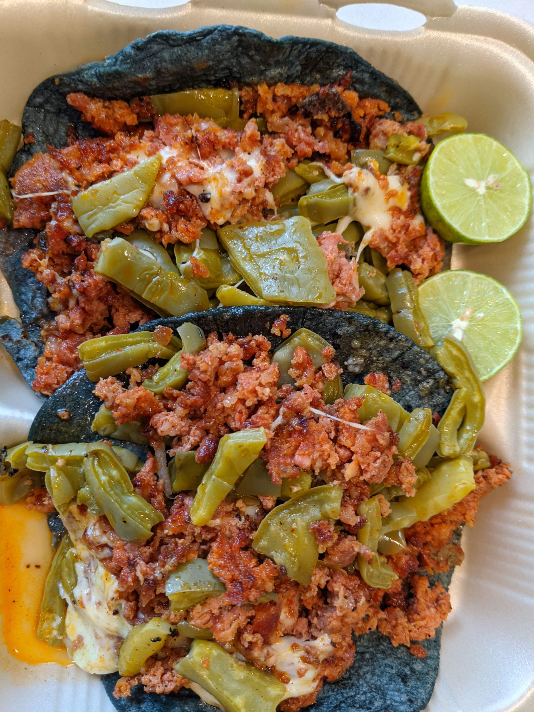
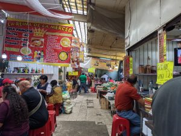
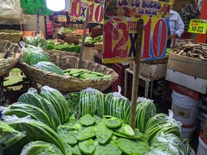
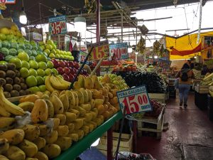

メキシコシティでノマドワーク～本場のタコスに驚いた～
メキシコで驚いたこと、それはタコス。
私が今まで食べてきた、こう、とおもってきたタコスと全く違うものだった。そしておいしい。
メキシコで食べたタコスはもっとシンプルな材料で作られる食べ物だった。
どういうことかというと、基本的にはトウモロコシもしくは小麦で作られたトルティーヤに、鉄板で焼いた肉をはさむ、という簡単な食べ物だった。そして、好みで刻んだトマト、玉ねぎ、コリアンダーを混ぜたサルサとサボテンのピクルスを乗っけて、スライスしたライムを絞り、赤や緑の唐辛子で作られた辛いソースをかけて食べる。さらに、チーズやスライスしたアボカドや、煮た豆をはさむのもいい。肉を焼くときに特別にハーブなどのスパイス類を使っている様子もない。複雑なレシピなどなく、こうでなければいけない、というのがないのだ。
↓レストランで食べたタコス。
お店の中で座って食べるのもいいが、屋台で立ち食いするタコスのおいしいこと。そして安いこと。ひとつ２５から３０ペソで食べられる。ワーケーションやノマドワーカーにとって毎日の食費がおさえれるのはありがたい限り。
滞在したホテルはオフィス街だったこともあり、労働者向けに近所の道には屋台がたくさんでていた。
↓１００％紫トウモロコシの手作りトルティーヤ生地。緑のはサボテン。テイクアウト用に容器を持っていってそれに入れてもらってホテルの部屋で食べた。

↓炒めた玉ねぎやポテトを挟めるところもある。
肉の種類も牛肉、豚肉、鶏肉の様々な部位を選べる。屋台によってはバルバコアというラム肉の料理や内臓系の肉だけを提供する店もある。
↓ 市場の一角にある食事コーナー。タコスを提供する店がひしめきあう。冷房はなく風のとおりもなく熱く焼けた鉄板でうだるような暑さのなか皆タコスをほおばる。

↓市場で食べたタコス。また来たい、というJ次郎の一番のお気に入りの店。小葱がまるごと添えられていてかじりながら食べるのが特徴。
↓タコスに添えられていたサボテン

市場ではマンゴーやバナナなど買ってホテルで食べた。ちょっと切って味見させてくれる店もある。

↓道で売っているカットマンゴー。おやつに食べた。おじさんのナイフさばきが見事。